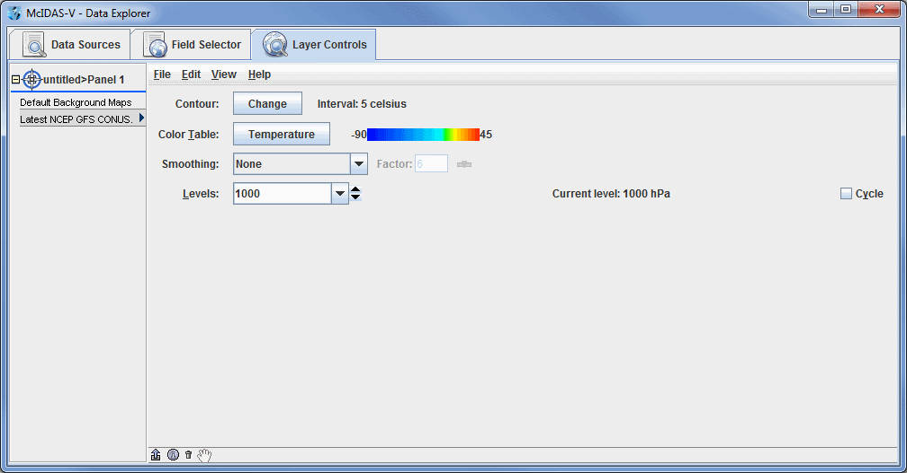
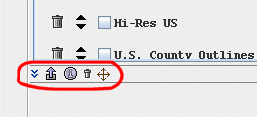
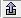
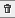

Layer Controls
The Layer Controls tab of the Data Explorer is used to modify an existing display. The options to choose from in this tab will vary depending on the data source and field selected.

Image 1: Layer Controls Tab
This section describes the specifics of the Layer Controls tab for different data sources and fields, including the following:
There are some general features of the Layer Controls tab that are consistent with every display, which are described below.
- Provides a dropdown menu with options to move the Main Display window to the front displaying the selected tab, and allows for accessing the View and Projections menus of the Main Display window.
These options are found at the bottom left corner of the Layer Controls tab of the Data Explorer.

Image 2: Options in the Layer Controls Tab
Properties
-  Undock Control Window - Undocks the selected controls from the Data Explorer. The Control Window can be redocked by selecting View->Dock in Data Explorer.
 Show Display Control Properties - Opens a Properties window, where a user can control basic settings, add a color scale to the Main Display window, change the times being displayed, or change the spatial subset of the data.
Show Display Control Properties - Opens a Properties window, where a user can control basic settings, add a color scale to the Main Display window, change the times being displayed, or change the spatial subset of the data.-  Remove Display Control - Removes the selected display from the Data Explorer and from the Main Display window.
- Drag and Drop to a Window Component - Allows for moving a layer from one panel/tab to another. This is done by selecting an item to move from one panel/tab to another by clicking on the item. Once the item is selected, click on the Drag and Drop to a Window Component icon, and while holding down the left mouse button, drag the mouse to the desired panel/tab and release the mouse click when over the desired panel/tab name, represented by the symbol. This will bring the selected field to the desired panel/tab in both the Layer Controls tab of the Data Explorer and in the Main Display window.
Menus
All parameters share a common set of File, Edit, View, and Help menu items, shown in the menu bar of the Layer Controls tab. Different controls may also have custom items in these menus as well.
The File menu has these common choices:
- Remove Display - Removes the display.
- Save - Saves the state of the display.
- Save Data in Cache - Saves the current data of the display in a Cache Data Source as a new field. The user will be prompted for the name of the field. This can be used in a variety of ways:
- After calculating a complex formula, selecting operands for the formula, etc., to create the data in a display a user can save the formula and the data that was calculated. Then new displays can be created from that formula without having to reselect the operands and recalculate the final data.
- The Web Map Server (WMS) display allows for the capturing of the image and then making use of it in formulas and in other displays. For example, the image can be draped over topography.
- Export Displayed Data to NetCDF - Saves the data in the NetCDF (*.nc) format.
- Save As Parameter Defaults - Saves the current display state for the parameter as the default for that parameter in the future. See the Parameter Defaults Editor page for more information.
- Save Display as Favorite - Saves the current display state (without the data) as a display template. This is an easy way to apply what is essentially parameter defaults to a variety of different fields. For example, if a display is created that uses Color-Shaded Plan View, an enhancement range of 0 - 90, the gray scale enhancement, and shade colors, this can be saved as a favorite display. This menu item opens a Save Display Template window, where a user can enter a category as well as a name. The category is used to determine what directory the bundle will be stored in and is not used directly in McIDAS-V. The name field sets the name of the display template, which will be seen in the Displays panel of the Field Selector. Now, a user can select a different field, the display template, and click Create Display. This will display the field that was selected by the user, but everything in the Layer Controls comes from the display template.
- Save Display as Bundle - Saves the current application state as a bundle.
- Reload Data - Reloads the data for this display.
The Edit menu has these common choices:
- Color Table - Edits the color table, changes the range, chooses a new color table, etc. This works for displays that have a color table.
- Change Parameter - Changes the parameter that is being displayed.
- Change Display Unit - Changes the unit that is used in the display, e.g., changing temperature plots in Kelvin to Celsius.
- Change Contours - Changes the different aspects of the contours in the image by opening the Contour Properties Editor.
- Sharing - Turns on/off sharing and sets the "share group". When sharing is turned on, control operations will be shared between two or more displays of the same type that are in the same share group. The share group can be an arbitrary name. For example, the location of a vertical cross section, the color table, location of a probe point, etc., can all be shared.
- Display Settings - Opens the Display Settings dialog, allowing for the selection of display properties to be applied to other display controls and/or to be saved as preferences to be used in the creation of new display controls.
- Properties - Opens the Properties dialog, allowing for the changing of customization of the display.
The View menu has these common choices:
- Visible - Toggles visibility. When selected, the parameter will be displayed in the Main Display window.
- Lock Visibility - Toggles the visibility lock (see cycling visibilities).
- Bring To Front - Selects which display is on top if one display is showing at the same level in 3D as another (e.g., satellite and radar images in the same display).
- Show View Window - Brings the Main Display window to the front.
- Times -
- Use Times in Animation - Loops the data when the layers have a time associated with them by adding the Time Animation Widget to the Main Display window.
- Drive Times with this Display - Sets the layer as the time driver. For more information, see Time Matching.
- Uses Time Driver Times - Sets the times of the layer to match the time driver times, assuming a time driver has been set. Note that the layer must be reloaded via File -> Reload Data after using this option. For more information, see Time Matching.
- Display List - Displays the parameter information at the bottom of the Main Display window and allows for setting the color of the text.
- Center on Display - Re-centers the display in the Main Display window without changing the zoom level if the display has been translated from its original position.
- Undock from Data Explorer - Unattaches the Layer Controls tab from the Data Explorer by making it its own window. This can be brought back to the Data Explorer by selecting View->Dock.
- Export to Component - Transfers the Layer Controls tab of the Data Explorer to the Main Display window as a separate tab. This can be brought back to the Data Explorer by selecting View->Undock, and once it is undocked, View->Dock.
The Help menu has these common choices:
- Details - Opens a window that shows detailed information about the display and any associated data.
- User's Guide - Opens the User's Guide entry relevant for the particular display.